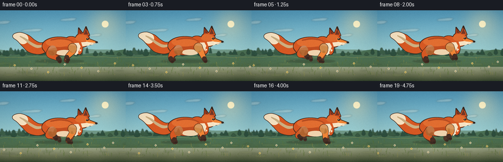
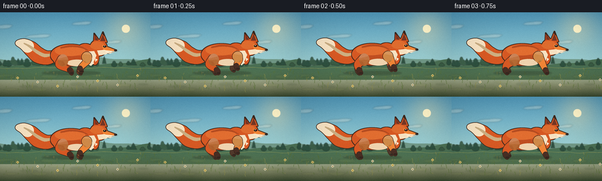
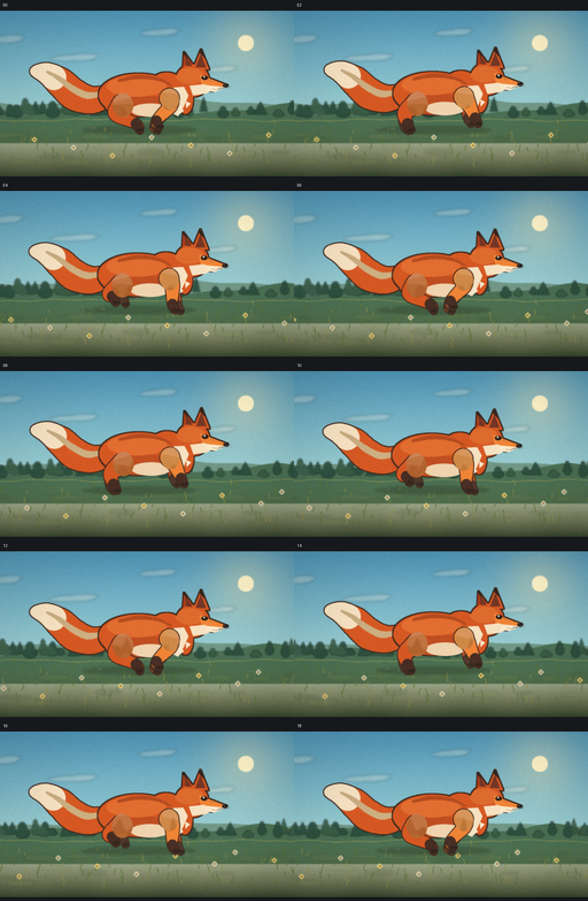
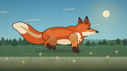

CODING AGENTS AS PIXEL WORLD MODELS
traex/DeepSeek-V4.1-Flash · instance_preservation_0014
点击播放 · 原生 RGB 像素
逐轮保存的候选
回放视频、检查图与代码变化。
每份候选均可单独播放。实际图片检查记录在下方工具轨迹中。
候选 01播放与检查图
点击播放 · 原生 RGB 像素

展开代码变化
--- 上一保存版本
+++ 本次保存版本
@@ -0,0 +1,771 @@
+from __future__ import annotations
+
+import argparse
+import math
+from pathlib import Path
+
+import numpy as np
+from PIL import Image, ImageDraw, ImageFilter
+
+import artifact_io
+
+
+WIDTH = 256
+HEIGHT = 144
+FRAMES = 20
+FPS = 4.0
+SCALE = 5
+W = WIDTH * SCALE
+H = HEIGHT * SCALE
+
+
+def rgba(color, alpha=255):
+ return tuple(color) + (alpha,)
+
+
+def scaled_point(point):
+ return (point[0] * SCALE, point[1] * SCALE)
+
+
+def scaled_box(box):
+ return tuple(value * SCALE for value in box)
+
+
+def draw_ellipse(layer, box, fill, outline=None, width=0):
+ draw = ImageDraw.Draw(layer)
+ draw.ellipse(
+ scaled_box(box),
+ fill=fill,
+ outline=outline,
+ width=max(0, round(width * SCALE)),
+ )
+
+
+def draw_polygon(layer, points, fill, outline=None, width=0):
+ draw = ImageDraw.Draw(layer)
+ draw.polygon(
+ [scaled_point(point) for point in points],
+ fill=fill,
+ outline=outline,
+ width=max(0, round(width * SCALE)),
+ )
+
+
+def draw_line(layer, points, fill, width=1):
+ draw = ImageDraw.Draw(layer)
+ draw.line(
+ [scaled_point(point) for point in points],
+ fill=fill,
+ width=max(1, round(width * SCALE)),
+ joint="curve",
+ )
+
+
+def catmull_rom(points, samples=12):
+ points = np.asarray(points, dtype=np.float64)
+ padded = np.vstack((points[0], points, points[-1]))
+ curve = []
+ for index in range(1, len(padded) - 2):
+ p0, p1, p2, p3 = padded[index - 1 : index + 3]
+ for step in range(samples):
+ t = step / samples
+ t2 = t * t
+ t3 = t2 * t
+ value = 0.5 * (
+ (2.0 * p1)
+ + (-p0 + p2) * t
+ + (2.0 * p0 - 5.0 * p1 + 4.0 * p2 - p3) * t2
+ + (-p0 + 3.0 * p1 - 3.0 * p2 + p3) * t3
+ )
+ curve.append(value)
+ curve.append(points[-1])
+ return np.asarray(curve)
+
+
+def tapered_path(
+ layer,
+ points,
+ widths,
+ fill,
+ outline=None,
+ outline_extra=0.9,
+ samples=12,
+ start_fraction=0.0,
+ end_fraction=1.0,
+):
+ curve = catmull_rom(points, samples=samples)
+ progress = np.linspace(0.0, 1.0, len(curve))
+ radius = np.interp(progress, np.linspace(0.0, 1.0, len(widths)), widths)
+ selected = (progress >= start_fraction) & (progress <= end_fraction)
+ draw = ImageDraw.Draw(layer)
+
+ if outline is not None:
+ for (x, y), r in zip(curve[selected], radius[selected]):
+ rr = (r + outline_extra) * SCALE
+ draw.ellipse(
+ (x * SCALE - rr, y * SCALE - rr, x * SCALE + rr, y * SCALE + rr),
+ fill=outline,
+ )
+
+ for (x, y), r in zip(curve[selected], radius[selected]):
+ rr = r * SCALE
+ draw.ellipse(
+ (x * SCALE - rr, y * SCALE - rr, x * SCALE + rr, y * SCALE + rr),
+ fill=fill,
+ )
+
+
+def outline_rgba(layer, color, thickness=1.0):
+ alpha = layer.getchannel("A")
+ kernel = max(3, round(thickness * SCALE * 2) | 1)
+ grown = alpha.filter(ImageFilter.MaxFilter(kernel))
+ edge = np.asarray(grown, dtype=np.int16) - np.asarray(alpha, dtype=np.int16)
+ edge = np.clip(edge, 0, 255).astype(np.uint8)
+ result = Image.new("RGBA", layer.size, rgba(color, 0))
+ result.putalpha(Image.fromarray(edge, mode="L"))
+ return result
+
+
+def blend_color(a, b, amount):
+ return tuple(round(x * (1.0 - amount) + y * amount) for x, y in zip(a, b))
+
+
+def wrap(value, span):
+ return value % span
+
+
+def background(frame):
+ image = Image.new("RGB", (W, H))
+ pixels = np.zeros((H, W, 3), dtype=np.float32)
+ y_norm = np.linspace(0.0, 1.0, H, dtype=np.float32)[:, None]
+
+ top = np.array([79, 150, 184], dtype=np.float32)
+ middle = np.array([151, 203, 208], dtype=np.float32)
+ horizon = np.array([246, 211, 169], dtype=np.float32)
+ lower = np.clip(y_norm / 0.56, 0.0, 1.0)
+ upper = np.clip((y_norm - 0.56) / 0.44, 0.0, 1.0)
+ sky = top[None, None, :] * (1.0 - lower[..., None]) + middle[None, None, :] * lower[..., None]
+ sky = sky * (1.0 - upper[..., None]) + horizon[None, None, :] * upper[..., None]
+ pixels[:] = sky
+
+ yy, xx = np.mgrid[0:H, 0:W]
+ sun_x = 214 * SCALE
+ sun_y = 28 * SCALE
+ distance2 = (xx - sun_x) ** 2 + (yy - sun_y) ** 2
+ glow = np.exp(-distance2 / (2.0 * (24 * SCALE) ** 2))
+ warm = np.array([255, 232, 173], dtype=np.float32)
+ pixels = pixels * (1.0 - 0.34 * glow[..., None]) + warm * (0.34 * glow[..., None])
+ sun_mask = distance2 <= (7.0 * SCALE) ** 2
+ pixels[sun_mask] = np.array([255, 244, 201], dtype=np.float32)
+
+ sky_image = Image.fromarray(np.clip(pixels, 0, 255).astype(np.uint8), mode="RGB").convert("RGBA")
+ image = sky_image
+
+ clouds = Image.new("RGBA", (W, H), (0, 0, 0, 0))
+ cloud_specs = [
+ (48, 25, 31, 6, 0.18),
+ (110, 41, 37, 5, 0.10),
+ (184, 19, 29, 5, 0.13),
+ (237, 51, 25, 4, 0.11),
+ ]
+ for base_x, y, length, height, speed in cloud_specs:
+ x = wrap(base_x - frame * speed, WIDTH + 90) - 45
+ for dx, dy, sx, sy, alpha in [
+ (0, 0, 1.0, 1.0, 72),
+ (length * 0.28, -2, 0.65, 0.7, 60),
+ (-length * 0.23, 1, 0.72, 0.75, 55),
+ ]:
+ box = (
+ (x + dx - length * sx * 0.5) * SCALE,
+ (y + dy - height * sy * 0.5) * SCALE,
+ (x + dx + length * sx * 0.5) * SCALE,
+ (y + dy + height * sy * 0.5) * SCALE,
+ )
+ ImageDraw.Draw(clouds).ellipse(box, fill=(255, 241, 219, alpha))
+ clouds = clouds.filter(ImageFilter.GaussianBlur(1.1 * SCALE))
+ image = Image.alpha_composite(image, clouds)
+
+ distant_scroll = frame * 1.15
+ ridge = Image.new("RGBA", (W, H), (0, 0, 0, 0))
+ draw = ImageDraw.Draw(ridge)
+ far_points = [(-20 * SCALE, 91 * SCALE)]
+ for x in np.linspace(-20, WIDTH + 20, 90):
+ wx = x + distant_scroll
+ y = 78.0 + 4.8 * math.sin(wx * 0.033) + 2.0 * math.sin(wx * 0.071 + 1.2)
+ far_points.append((x * SCALE, y * SCALE))
+ far_points.extend([((WIDTH + 20) * SCALE, 112 * SCALE), (-20 * SCALE, 112 * SCALE)])
+ draw.polygon(far_points, fill=(112, 151, 134, 255))
+
+ near_points = [(-20 * SCALE, 95 * SCALE)]
+ for x in np.linspace(-20, WIDTH + 20, 90):
+ wx = x + distant_scroll * 1.4
+ y = 85.5 + 4.0 * math.sin(wx * 0.041 + 0.7) + 1.6 * math.sin(wx * 0.092)
+ near_points.append((x * SCALE, y * SCALE))
+ near_points.extend([((WIDTH + 20) * SCALE, 115 * SCALE), (-20 * SCALE, 115 * SCALE)])
+ draw.polygon(near_points, fill=(74, 111, 83, 255))
+ image = Image.alpha_composite(image, ridge)
+
+ tree_scroll = frame * 1.65
+ trees = Image.new("RGBA", (W, H), (0, 0, 0, 0))
+ tree_draw = ImageDraw.Draw(trees)
+ rng = np.random.default_rng(19)
+ for index in range(34):
+ x = wrap(index * 12.4 + rng.uniform(-3.5, 3.5) - tree_scroll, WIDTH + 36) - 18
+ base_y = 92.5 + 1.5 * math.sin((x + tree_scroll) * 0.08 + index)
+ height = rng.uniform(7.0, 15.5)
+ width = rng.uniform(3.4, 6.2)
+ color = (42, 76, 60, 235) if index % 3 else (55, 89, 66, 230)
+ if index % 4 == 0:
+ for k in range(3):
+ cy = base_y - height * (0.25 + k * 0.22)
+ half = width * (1.0 - k * 0.21)
+ tree_draw.polygon(
+ [
+ ((x - half) * SCALE, cy * SCALE),
+ ((x + half) * SCALE, cy * SCALE),
+ (x * SCALE, (cy - height * 0.48) * SCALE),
+ ],
+ fill=color,
+ )
+ else:
+ tree_draw.ellipse(
+ scaled_box((x - width, base_y - height * 0.70, x + width, base_y - 1.0)),
+ fill=color,
+ )
+ tree_draw.ellipse(
+ scaled_box(
+ (
+ x - width * 0.65,
+ base_y - height,
+ x + width * 0.55,
+ base_y - height * 0.35,
+ )
+ ),
+ fill=color,
+ )
+ trees = trees.filter(ImageFilter.GaussianBlur(0.55 * SCALE))
+ image = Image.alpha_composite(image, trees)
+
+ ground_scroll = frame * 4.7
+ ground = Image.new("RGBA", (W, H), (0, 0, 0, 0))
+ ground_pixels = np.zeros((H, W, 4), dtype=np.uint8)
+ top_y = 95.0 + 1.0 * np.sin(np.linspace(0, math.tau, W) * 3.0)
+ for row in range(H):
+ row_y = row / SCALE
+ alpha = np.clip((row_y - top_y + 0.8) * SCALE, 0, 255).astype(np.uint8)
+ amount = np.clip((row_y - 94.0) / (HEIGHT - 94.0), 0, 1)
+ color_top = np.array([106, 124, 69])
+ color_bottom = np.array([49, 66, 42])
+ color = color_top * (1.0 - amount) + color_bottom * amount
+ ground_pixels[row, :, :3] = color.astype(np.uint8)
+ ground_pixels[row, :, 3] = alpha
+ ground = Image.fromarray(ground_pixels, mode="RGBA")
+
+ patches = Image.new("RGBA", (W, H), (0, 0, 0, 0))
+ patch_draw = ImageDraw.Draw(patches)
+ for index in range(24):
+ x = wrap(index * 18.5 + rng.uniform(-8, 8) - ground_scroll * 0.65, WIDTH + 60) - 30
+ y = 106 + rng.uniform(0, 27)
+ length = rng.uniform(11, 32)
+ height = rng.uniform(2, 6)
+ shade = (137, 145, 77, 32) if index % 3 else (46, 66, 39, 32)
+ patch_draw.ellipse(
+ scaled_box((x - length / 2, y - height / 2, x + length / 2, y + height / 2)),
+ fill=shade,
+ )
+ patches = patches.filter(ImageFilter.GaussianBlur(0.9 * SCALE))
+ ground = Image.alpha_composite(ground, patches)
+ image = Image.alpha_composite(image, ground)
+
+ grass = Image.new("RGBA", (W, H), (0, 0, 0, 0))
+ grass_draw = ImageDraw.Draw(grass)
+ for index in range(128):
+ x = wrap(index * 8.9 + rng.uniform(-4, 4) - ground_scroll, WIDTH + 28) - 14
+ y = 99.0 + rng.uniform(0, 38)
+ height = rng.uniform(2.0, 7.0)
+ lean = rng.uniform(-2.2, 2.2)
+ color = (89, 112, 53, 195) if index % 4 else (145, 142, 70, 180)
+ grass_draw.line(
+ [
+ (x * SCALE, y * SCALE),
+ ((x + lean * 0.35) * SCALE, (y - height * 0.58) * SCALE),
+ ((x + lean) * SCALE, (y - height) * SCALE),
+ ],
+ fill=color,
+ width=max(1, round(0.7 * SCALE)),
+ joint="curve",
+ )
+
+ for index in range(9):
+ x = wrap(index * 34 + 13 - ground_scroll * 1.08, WIDTH + 34) - 17
+ y = 105 + (index * 7) % 23
+ color = (246, 218, 123, 210) if index % 2 else (240, 231, 197, 205)
+ for petal in range(4):
+ angle = petal * math.pi / 2
+ px = x + 1.25 * math.cos(angle)
+ py = y + 1.25 * math.sin(angle)
+ grass_draw.ellipse(
+ scaled_box((px - 1.05, py - 1.05, px + 1.05, py + 1.05)),
+ fill=color,
+ )
+ grass_draw.ellipse(
+ scaled_box((x - 0.8, y - 0.8, x + 0.8, y + 0.8)),
+ fill=(151, 111, 47, 230),
+ )
+
+ image = Image.alpha_composite(image, grass)
+
+ top_edge = Image.new("RGBA", (W, H), (0, 0, 0, 0))
+ edge_draw = ImageDraw.Draw(top_edge)
+ edge_points = []
+ for x in np.linspace(-5, WIDTH + 5, 90):
+ wx = x + ground_scroll
+ y = 95.0 + 0.8 * math.sin(wx * 0.06) + 0.45 * math.sin(wx * 0.17)
+ edge_points.append((x * SCALE, y * SCALE))
+ edge_draw.line(edge_points, fill=(168, 165, 87, 150), width=round(0.8 * SCALE))
+ image = Image.alpha_composite(image, top_edge)
+ return image
+
+
+def leg_geometry(kind, phase, base_x, attach_y, ground_y, bob, far=False):
+ theta = math.tau * phase
+ cosine = math.cos(theta)
+ sine = math.sin(theta)
+ swing = max(0.0, -sine)
+ lift = 7.6 * (swing**0.82)
+ if far:
+ lift *= 0.82
+ stride = 13.5 if kind == "hind" else 12.5
+ base_foot_x = base_x + 2.0
+ foot_x = base_foot_x + stride * cosine
+ foot_y = ground_y - lift + (0.8 if far else 0.0)
+ attach = (base_x, attach_y + bob)
+ if kind == "hind":
+ knee = (base_x - 8.0 + 3.5 * cosine, attach_y + bob + 8.5 - lift * 0.13)
+ hock = (foot_x - 2.8, foot_y - 5.1)
+ else:
+ knee = (base_x + 2.5 + 2.5 * cosine, attach_y + bob + 7.5 - lift * 0.12)
+ hock = (foot_x - 1.5, foot_y - 4.9)
+ paw = (foot_x + (1.0 if kind == "front" else 0.0), foot_y)
+ return [attach, knee, hock, paw], lift
+
+
+def draw_leg(layer, points, fill, dark_fill, outline, width_scale=1.0, alpha=255):
+ attach, knee, hock, paw = points
+ widths = [8.4 * width_scale, 6.0 * width_scale, 4.0 * width_scale, 3.0 * width_scale]
+ tapered_path(
+ layer,
+ [attach, knee, hock, paw],
+ widths,
+ rgba(fill, alpha),
+ outline=rgba(outline, alpha),
+ outline_extra=0.8,
+ samples=11,
+ )
+ tapered_path(
+ layer,
+ [hock, paw],
+ [4.1 * width_scale, 3.1 * width_scale],
+ rgba(dark_fill, alpha),
+ outline=rgba(outline, alpha),
+ outline_extra=0.55,
+ samples=10,
+ )
+ draw_ellipse(
+ layer,
+ (paw[0] - 2.8, paw[1] - 1.3, paw[0] + 3.5, paw[1] + 1.7),
+ rgba((52, 37, 30), alpha),
+ )
+
+
+def draw_fox(frame):
+ layer = Image.new("RGBA", (W, H), (0, 0, 0, 0))
+ phase = (frame / 6.0) % 1.0
+ bob = -1.65 * (0.5 + 0.5 * math.sin(math.tau * phase - 0.55))
+ fox_x = 2.0 + 0.55 * math.sin(math.tau * phase)
+ ground_y = 103.5
+
+ orange = (213, 88, 35)
+ orange_light = (239, 132, 54)
+ orange_dark = (165, 60, 27)
+ outline = (61, 40, 29)
+ cream = (246, 225, 193)
+ dark = (48, 36, 31)
+
+ # Tail, drawn as a broad tapered curve behind the torso.
+ tail_root = (93.0 + fox_x, 74.0 + bob)
+ tail_points = [
+ tail_root,
+ (78.0 + fox_x, 78.0 + bob),
+ (63.0 + fox_x, 73.5 + bob),
+ (51.0 + fox_x, 63.0 + bob),
+ (39.0 + fox_x, 55.0 + bob),
+ (28.5 + fox_x, 53.0 + bob),
+ ]
+ tail_widths = [8.5, 11.4, 13.2, 12.4, 9.1, 4.3]
+ tapered_path(
+ layer,
+ tail_points,
+ tail_widths,
+ rgba(orange_dark),
+ outline=rgba(outline),
+ outline_extra=1.0,
+ samples=14,
+ )
+ tapered_path(
+ layer,
+ tail_points,
+ tail_widths,
+ rgba(orange),
+ samples=14,
+ )
+ tapered_path(
+ layer,
+ tail_points,
+ tail_widths,
+ rgba(cream),
+ samples=14,
+ start_fraction=0.69,
+ end_fraction=1.0,
+ )
+ tapered_path(
+ layer,
+ [
+ (88.0 + fox_x, 72.0 + bob),
+ (74.0 + fox_x, 74.0 + bob),
+ (61.0 + fox_x, 68.0 + bob),
+ (49.0 + fox_x, 59.0 + bob),
+ (39.0 + fox_x, 53.5 + bob),
+ ],
+ [1.6, 3.0, 2.8, 2.0, 0.9],
+ rgba((248, 159, 76), 150),
+ samples=12,
+ )
+
+ far_hind_phase = (phase + 0.08) % 1.0
+ far_front_phase = (phase + 0.47) % 1.0
+ far_hind, _ = leg_geometry(
+ "hind", far_hind_phase, 106.0 + fox_x, 82.5, ground_y, bob, far=True
+ )
+ far_front, _ = leg_geometry(
+ "front", far_front_phase, 144.5 + fox_x, 77.0, ground_y, bob, far=True
+ )
+ draw_leg(layer, far_hind, (177, 67, 30), (78, 48, 37), outline, 0.92, 235)
+ draw_leg(layer, far_front, (185, 72, 34), (79, 50, 39), outline, 0.91, 235)
+
+ # One body mask keeps the silhouette clean despite the compound anatomy.
+ body = Image.new("RGBA", (W, H), (0, 0, 0, 0))
+ draw_polygon(
+ body,
+ [
+ (157.0 + fox_x, 52.0 + bob),
+ (158.0 + fox_x, 36.5 + bob),
+ (166.5 + fox_x, 48.0 + bob),
+ ],
+ rgba(orange_dark),
+ )
+ draw_polygon(
+ body,
+ [
+ (166.0 + fox_x, 51.0 + bob),
+ (173.0 + fox_x, 34.0 + bob),
+ (180.0 + fox_x, 51.5 + bob),
+ ],
+ rgba(orange),
+ )
+ draw_ellipse(
+ body,
+ (84.0 + fox_x, 55.0 + bob, 153.0 + fox_x, 92.0 + bob),
+ rgba(orange),
+ )
+ draw_ellipse(
+ body,
+ (88.0 + fox_x, 62.0 + bob, 117.0 + fox_x, 92.0 + bob),
+ rgba(orange),
+ )
+ draw_ellipse(
+ body,
+ (126.0 + fox_x, 54.0 + bob, 160.0 + fox_x, 88.0 + bob),
+ rgba(orange),
+ )
+ draw_ellipse(
+ body,
+ (151.0 + fox_x, 47.0 + bob, 180.0 + fox_x, 75.0 + bob),
+ rgba(orange),
+ )
+ draw_polygon(
+ body,
+ [
+ (172.0 + fox_x, 56.0 + bob),
+ (196.0 + fox_x, 65.2 + bob),
+ (183.0 + fox_x, 70.2 + bob),
+ (174.0 + fox_x, 70.0 + bob),
+ ],
+ rgba(orange_light),
+ )
+ draw_ellipse(
+ body,
+ (153.0 + fox_x, 65.0 + bob, 166.0 + fox_x, 90.0 + bob),
+ rgba(orange),
+ )
+
+ outer = outline_rgba(body, outline, 0.95)
+ layer = Image.alpha_composite(layer, outer)
+ layer = Image.alpha_composite(layer, body)
+
+ shading = Image.new("RGBA", (W, H), (0, 0, 0, 0))
+ draw_ellipse(
+ shading,
+ (92.0 + fox_x, 74.0 + bob, 154.0 + fox_x, 96.0 + bob),
+ rgba((128, 48, 26), 65),
+ )
+ draw_ellipse(
+ shading,
+ (91.0 + fox_x, 57.0 + bob, 143.0 + fox_x, 75.0 + bob),
+ rgba((255, 166, 82), 70),
+ )
+ draw_ellipse(
+ shading,
+ (151.0 + fox_x, 50.0 + bob, 176.0 + fox_x, 64.0 + bob),
+ rgba((255, 174, 87), 55),
+ )
+ tapered_path(
+ shading,
+ [
+ (102.0 + fox_x, 61.0 + bob),
+ (119.0 + fox_x, 58.0 + bob),
+ (136.0 + fox_x, 60.0 + bob),
+ (147.0 + fox_x, 65.0 + bob),
+ ],
+ [1.3, 1.8, 1.4, 0.8],
+ rgba((124, 54, 27), 95),
+ samples=11,
+ )
+ shading.putalpha(Image.composite(shading.getchannel("A"), Image.new("L", (W, H)), body.getchannel("A")))
+ layer = Image.alpha_composite(layer, shading)
+
+ # Cream chest, belly, cheek, and muzzle.
+ draw_polygon(
+ layer,
+ [
+ (149.5 + fox_x, 67.0 + bob),
+ (158.0 + fox_x, 66.5 + bob),
+ (162.0 + fox_x, 74.0 + bob),
+ (158.2 + fox_x, 83.0 + bob),
+ (153.0 + fox_x, 92.0 + bob),
+ (147.0 + fox_x, 89.0 + bob),
+ (143.5 + fox_x, 82.0 + bob),
+ ],
+ rgba(cream),
+ )
+ draw_ellipse(
+ layer,
+ (112.0 + fox_x, 81.0 + bob, 146.0 + fox_x, 92.5 + bob),
+ rgba((239, 211, 174)),
+ )
+ draw_polygon(
+ layer,
+ [
+ (163.0 + fox_x, 65.5 + bob),
+ (176.0 + fox_x, 64.2 + bob),
+ (184.0 + fox_x, 68.0 + bob),
+ (178.0 + fox_x, 72.3 + bob),
+ (166.0 + fox_x, 74.0 + bob),
+ ],
+ rgba(cream),
+ )
+ draw_polygon(
+ layer,
+ [
+ (177.0 + fox_x, 65.0 + bob),
+ (195.5 + fox_x, 66.8 + bob),
+ (185.0 + fox_x, 71.0 + bob),
+ (178.0 + fox_x, 70.0 + bob),
+ ],
+ rgba((251, 232, 202)),
+ )
+ for tuft in [
+ [(151.0, 82.0), (148.0, 88.0), (154.0, 86.0)],
+ [(155.0, 83.0), (153.0, 91.0), (158.0, 87.5)],
+ [(160.0, 79.0), (160.0, 85.0), (164.0, 81.0)],
+ ]:
+ draw_polygon(
+ layer,
+ [(x + fox_x, y + bob) for x, y in tuft],
+ rgba((250, 232, 205)),
+ )
+
+ # Near legs sit in front of the body and carry the strongest motion.
+ near_hind_phase = phase
+ near_front_phase = (phase + 0.55) % 1.0
+ near_hind, near_hind_lift = leg_geometry(
+ "hind", near_hind_phase, 104.0 + fox_x, 82.0, ground_y, bob
+ )
+ near_front, near_front_lift = leg_geometry(
+ "front", near_front_phase, 145.5 + fox_x, 76.5, ground_y, bob
+ )
+ draw_leg(layer, near_hind, orange, (70, 45, 35), outline, 1.04)
+ draw_leg(layer, near_front, orange_light, (72, 46, 36), outline, 1.0)
+ draw_ellipse(
+ layer,
+ (96.0 + fox_x, 72.0 + bob, 114.0 + fox_x, 93.0 + bob),
+ rgba((226, 102, 37), 180),
+ )
+ draw_ellipse(
+ layer,
+ (138.0 + fox_x, 68.0 + bob, 154.0 + fox_x, 87.0 + bob),
+ rgba((242, 132, 49), 185),
+ )
+
+ # Ear interiors and dark tips.
+ draw_polygon(
+ layer,
+ [
+ (160.2 + fox_x, 48.2 + bob),
+ (159.4 + fox_x, 39.7 + bob),
+ (165.2 + fox_x, 48.6 + bob),
+ ],
+ rgba((112, 53, 36)),
+ )
+ draw_polygon(
+ layer,
+ [
+ (168.5 + fox_x, 49.5 + bob),
+ (172.9 + fox_x, 37.8 + bob),
+ (177.4 + fox_x, 49.8 + bob),
+ ],
+ rgba((115, 54, 37)),
+ )
+ draw_polygon(
+ layer,
+ [
+ (157.0 + fox_x, 37.0 + bob),
+ (158.2 + fox_x, 35.3 + bob),
+ (161.3 + fox_x, 42.0 + bob),
+ ],
+ rgba(dark),
+ )
+ draw_polygon(
+ layer,
+ [
+ (171.6 + fox_x, 36.6 + bob),
+ (173.1 + fox_x, 33.9 + bob),
+ (176.0 + fox_x, 41.5 + bob),
+ ],
+ rgba(dark),
+ )
+
+ # Face details.
+ draw_ellipse(
+ layer,
+ (173.3 + fox_x, 56.8 + bob, 179.1 + fox_x, 60.5 + bob),
+ rgba((43, 31, 26)),
+ )
+ draw_ellipse(
+ layer,
+ (175.1 + fox_x, 57.2 + bob, 176.5 + fox_x, 58.5 + bob),
+ rgba((255, 235, 192)),
+ )
+ draw_line(
+ layer,
+ [(180.4 + fox_x, 60.7 + bob), (184.0 + fox_x, 62.1 + bob)],
+ rgba((123, 65, 39), 180),
+ width=0.45,
+ )
+ draw_ellipse(
+ layer,
+ (192.0 + fox_x, 63.7 + bob, 197.0 + fox_x, 67.3 + bob),
+ rgba((36, 28, 26)),
+ )
+ draw_ellipse(
+ layer,
+ (193.1 + fox_x, 64.2 + bob, 194.2 + fox_x, 65.0 + bob),
+ rgba((116, 92, 78)),
+ )
+ draw_line(
+ layer,
+ [(194.2 + fox_x, 67.0 + bob), (187.0 + fox_x, 69.2 + bob), (182.8 + fox_x, 68.4 + bob)],
+ rgba((101, 59, 42)),
+ width=0.48,
+ )
+ for offset, alpha in [(-1.0, 100), (0.0, 135), (1.1, 100)]:
+ draw_line(
+ layer,
+ [
+ (188.0 + fox_x, 68.0 + bob + offset * 0.3),
+ (199.0 + fox_x, 66.4 + bob + offset),
+ ],
+ rgba((77, 58, 46), alpha),
+ width=0.22,
+ )
+
+ # Contact dust and a few speed accents are deterministic in the cycle.
+ dust = Image.new("RGBA", (W, H), (0, 0, 0, 0))
+ dust_draw = ImageDraw.Draw(dust)
+ for index in range(7):
+ age = (frame + index * 3) % 14
+ if age >= 8:
+ continue
+ x = 100.0 + fox_x - age * 2.8 - index * 1.8
+ y = ground_y - 1.0 - age * 0.10 + (index % 2) * 0.7
+ radius = 1.1 + age * 0.30
+ alpha = round(66 * (1.0 - age / 8.0))
+ dust_draw.ellipse(
+ scaled_box((x - radius, y - radius * 0.65, x + radius, y + radius * 0.65)),
+ fill=(218, 190, 139, alpha),
+ )
+ dust = dust.filter(ImageFilter.GaussianBlur(0.8 * SCALE))
+ layer = Image.alpha_composite(dust, layer)
+
+ shadow = Image.new("RGBA", (W, H), (0, 0, 0, 0))
+ draw_ellipse(
+ shadow,
+ (69.0 + fox_x, 100.0, 169.0 + fox_x, 107.0),
+ rgba((35, 40, 26), 72),
+ )
+ shadow = shadow.filter(ImageFilter.GaussianBlur(1.1 * SCALE))
+ return shadow, layer
+
+
+def render_frame(frame):
+ background_image = background(frame).convert("RGBA")
+ background_image = background_image.filter(ImageFilter.GaussianBlur(0.25 * SCALE))
+ shadow, fox = draw_fox(frame)
+ composite = Image.alpha_composite(background_image, shadow)
+ composite = Image.alpha_composite(composite, fox)
+
+ vignette = Image.new("L", (W, H), 0)
+ vignette_pixels = np.asarray(vignette).copy()
+ yy, xx = np.mgrid[0:H, 0:W]
+ nx = (xx / W - 0.5) * 2.0
+ ny = (yy / H - 0.5) * 2.0
+ radius = np.sqrt(nx * nx + ny * ny)
+ alpha = np.clip((radius - 0.55) * 38, 0, 45).astype(np.uint8)
+ vignette_pixels[:] = alpha
+ dark_layer = Image.new("RGBA", (W, H), (18, 25, 23, 255))
+ dark_layer.putalpha(Image.fromarray(vignette_pixels, mode="L"))
+ composite = Image.alpha_composite(composite, dark_layer)
+
+ frame_image = composite.convert("RGB").resize(
+ (WIDTH, HEIGHT), Image.Resampling.LANCZOS
+ )
+ array = np.asarray(frame_image, dtype=np.int16)
+ noise_rng = np.random.default_rng(1000 + frame)
+ noise = noise_rng.integers(-2, 3, size=(HEIGHT, WIDTH, 1), dtype=np.int16)
+ array = np.clip(array + noise, 0, 255).astype(np.uint8)
+ return array
+
+
+def main():
+ parser = argparse.ArgumentParser()
+ parser.add_argument("--out", type=Path, default=Path.cwd())
+ args = parser.parse_args()
+ output_dir = args.out.resolve()
+ output_dir.mkdir(parents=True, exist_ok=True)
+ frames = [render_frame(index) for index in range(FRAMES)]
+ artifact_io.save(np.stack(frames), output_dir)
+ print(f"Saved {FRAMES} frames to {output_dir}")
+
+
+if __name__ == "__main__":
+ main()
候选 02播放与检查图
点击播放 · 原生 RGB 像素
展开代码变化
--- 上一保存版本
+++ 本次保存版本
@@ -158,7 +158,7 @@
sun_mask = distance2 <= (7.0 * SCALE) ** 2
pixels[sun_mask] = np.array([255, 244, 201], dtype=np.float32)
- sky_image = Image.fromarray(np.clip(pixels, 0, 255).astype(np.uint8), mode="RGB").convert("RGBA")
+ sky_image = Image.fromarray(np.clip(pixels, 0, 255).astype(np.uint8)).convert("RGBA")
image = sky_image
clouds = Image.new("RGBA", (W, H), (0, 0, 0, 0))
@@ -259,7 +259,7 @@
color = color_top * (1.0 - amount) + color_bottom * amount
ground_pixels[row, :, :3] = color.astype(np.uint8)
ground_pixels[row, :, 3] = alpha
- ground = Image.fromarray(ground_pixels, mode="RGBA")
+ ground = Image.fromarray(ground_pixels)
patches = Image.new("RGBA", (W, H), (0, 0, 0, 0))
patch_draw = ImageDraw.Draw(patches)
@@ -394,13 +394,14 @@
# Tail, drawn as a broad tapered curve behind the torso.
tail_root = (93.0 + fox_x, 74.0 + bob)
+ tail_sway = 1.7 * math.sin(math.tau * phase - 0.85)
tail_points = [
tail_root,
- (78.0 + fox_x, 78.0 + bob),
- (63.0 + fox_x, 73.5 + bob),
- (51.0 + fox_x, 63.0 + bob),
- (39.0 + fox_x, 55.0 + bob),
- (28.5 + fox_x, 53.0 + bob),
+ (78.0 + fox_x, 78.0 + bob + tail_sway * 0.12),
+ (63.0 + fox_x, 73.5 + bob + tail_sway * 0.30),
+ (51.0 + fox_x, 63.0 + bob + tail_sway * 0.55),
+ (39.0 + fox_x, 55.0 + bob + tail_sway * 0.82),
+ (28.5 + fox_x, 53.0 + bob + tail_sway),
]
tail_widths = [8.5, 11.4, 13.2, 12.4, 9.1, 4.3]
tapered_path(
@@ -475,17 +476,17 @@
)
draw_ellipse(
body,
- (84.0 + fox_x, 55.0 + bob, 153.0 + fox_x, 92.0 + bob),
+ (84.0 + fox_x, 56.0 + bob, 153.0 + fox_x, 90.0 + bob),
rgba(orange),
)
draw_ellipse(
body,
- (88.0 + fox_x, 62.0 + bob, 117.0 + fox_x, 92.0 + bob),
+ (88.0 + fox_x, 62.0 + bob, 117.0 + fox_x, 90.0 + bob),
rgba(orange),
)
draw_ellipse(
body,
- (126.0 + fox_x, 54.0 + bob, 160.0 + fox_x, 88.0 + bob),
+ (126.0 + fox_x, 54.0 + bob, 160.0 + fox_x, 87.0 + bob),
rgba(orange),
)
draw_ellipse(
@@ -505,7 +506,7 @@
)
draw_ellipse(
body,
- (153.0 + fox_x, 65.0 + bob, 166.0 + fox_x, 90.0 + bob),
+ (153.0 + fox_x, 65.0 + bob, 166.0 + fox_x, 88.0 + bob),
rgba(orange),
)
@@ -513,10 +514,22 @@
layer = Image.alpha_composite(layer, outer)
layer = Image.alpha_composite(layer, body)
+ rim = Image.new("RGBA", (W, H), (0, 0, 0, 0))
+ shifted_alpha = Image.new("L", (W, H), 0)
+ shifted_alpha.paste(body.getchannel("A"), (0, round(0.85 * SCALE)))
+ rim_mask = np.asarray(body.getchannel("A"), dtype=np.int16) - np.asarray(
+ shifted_alpha, dtype=np.int16
+ )
+ rim_mask = np.clip(rim_mask, 0, 255).astype(np.uint8)
+ rim.putalpha(Image.fromarray(rim_mask))
+ rim.paste((255, 181, 91, 255), (0, 0, W, H), rim)
+ rim.putalpha(Image.fromarray(rim_mask).point(lambda value: value * 105 // 255))
+ layer = Image.alpha_composite(layer, rim)
+
shading = Image.new("RGBA", (W, H), (0, 0, 0, 0))
draw_ellipse(
shading,
- (92.0 + fox_x, 74.0 + bob, 154.0 + fox_x, 96.0 + bob),
+ (92.0 + fox_x, 73.0 + bob, 154.0 + fox_x, 93.0 + bob),
rgba((128, 48, 26), 65),
)
draw_ellipse(
@@ -560,7 +573,7 @@
)
draw_ellipse(
layer,
- (112.0 + fox_x, 81.0 + bob, 146.0 + fox_x, 92.5 + bob),
+ (112.0 + fox_x, 80.0 + bob, 146.0 + fox_x, 90.8 + bob),
rgba((239, 211, 174)),
)
draw_polygon(
@@ -743,7 +756,7 @@
alpha = np.clip((radius - 0.55) * 38, 0, 45).astype(np.uint8)
vignette_pixels[:] = alpha
dark_layer = Image.new("RGBA", (W, H), (18, 25, 23, 255))
- dark_layer.putalpha(Image.fromarray(vignette_pixels, mode="L"))
+ dark_layer.putalpha(Image.fromarray(vignette_pixels))
composite = Image.alpha_composite(composite, dark_layer)
frame_image = composite.convert("RGB").resize(
候选 03播放与检查图
可观测工具轨迹
实际执行的命令与返回图片。
命令 1exit 0
/bin/bash -c "pwd && rg --files -g '"'!**/.git/**'"' | sed -n '1,120p'"
命令 2exit 0
/bin/bash -c 'cat prompt.txt'
命令 3exit 0
/bin/bash -c 'cat GENERATION_RULES.md'
命令 4exit 0
/bin/bash -c 'cat task_spec.json'
命令 5exit 0
/bin/bash -c "sed -n '1,240p' artifact_io.py"
命令 6exit 0
/bin/bash -c "sed -n '1,260p' player_template.html"
命令 7exit 0
/bin/bash -c "python - <<'PY' import importlib.util for m in ['numpy','PIL','cv2','imageio','matplotlib','scipy']: print(m, bool(importlib.util.find_spec(m))) PY"
命令 8exit 0
/bin/bash -c 'python generate.py'
命令 9exit 1
/bin/bash -c 'command -v magick || command -v convert'
命令 10exit 1
/bin/bash -c "command -v ffmpeg && ffmpeg -version | sed -n '1p'"
命令 11exit 0
/bin/bash -c "python - <<'PY'
from PIL import Image
import numpy as np
im=np.asarray(Image.open('frames/04.png'))
print(im.shape, im.dtype, im.min(), im.max(), im.mean(axis=(0,1)))
# bounding box of fox-like orange pixels
m=(im[:,:,0]>140)&(im[:,:,0]>im[:,:,1]*1.35)&(im[:,:,1]<140)
y,x=np.where(m)
print('orange bbox', x.min(), y.min(), x.max(), y.max(), 'count', len(x))
PY"命令 12exit 0
/bin/bash -c "python - <<'PY'
from PIL import Image,ImageDraw
indices=[0,2,4,6,8,10,12,14,16,18]
ims=[Image.open(f'frames/{i:02d}.png').resize((768,432),Image.Resampling.NEAREST) for i in indices]
out=Image.new('RGB',(768*2,470*5),(22,24,28)); d=ImageDraw.Draw(out)
for k,(i,im) in enumerate(zip(indices,ims)):
x=(k%2)*768; y=(k//2)*470; out.paste(im,(x,y+28)); d.text((x+8,y+7),f'{i:02d}',fill='white')
out.save('.tmp/detail_sheet.png')
PY"命令 13exit 0
/bin/bash -c 'python generate.py'
命令 14exit 0
/bin/bash -c "python - <<'PY'
from pathlib import Path
import hashlib, json
import numpy as np
from PIL import Image
spec=json.loads(Path('task_spec.json').read_text())
z=np.load('pixels.npz')['pixels']
assert z.shape == (spec['height'],spec['width'],spec['frames'])
imgs=[np.asarray(Image.open(f'frames/{i:02d}.png')) for i in range(spec['frames'])]
a=np.stack(imgs)
assert a.shape == (spec['frames'],spec['height'],spec['width'],3) and a.dtype==np.uint8
packed=(a[:,:,:,0].astype(np.uint32)<<16)|(a[:,:,:,1].astype(np.uint32)<<8)|a[:,:,:,2]
assert np.array_equal(packed.transpose(1,2,0),z)
diff=[np.count_nonzero(a[i]"'!=a[i-1]) for i in range(1,len(a))]
assert all(d>0 for d in diff)
print('"'frames:',a.shape,'fps:',spec['fps'],'duration:',len(a)/spec['fps'])
print('pixel hash:',hashlib.sha256(a.tobytes()).hexdigest()[:16])
print('changed pixels between frames:',min(diff),'to',max(diff))
print('unique colors:',len(np.unique(a.reshape(-1,3),axis=0)))
print('artifacts:',', '.join(p.name for p in sorted(Path('.').iterdir()) if p.is_file()))
PY"命令 15exit 1
/bin/bash -c 'before=$(sha256sum frames/*.png | sha256sum | cut -d'"' ' -f1); python generate.py >/tmp/fox_generate.log 2>&1; after="'$(sha256sum frames/*.png | sha256sum | cut -d'"' ' -f1); printf 'before=%s\\nafter=%s\\n' \""'$before" "$after"; test "$before" = "$after"; tail -n 1 /tmp/fox_generate.log'
命令 16exit 0
/bin/bash -c 'before=$(sha256sum frames/*.png | sha256sum | cut -d'"' ' -f1); python generate.py >.tmp/fox_generate.log 2>&1; after="'$(sha256sum frames/*.png | sha256sum | cut -d'"' ' -f1); printf 'before=%s\\nafter=%s\\n' \""'$before" "$after"; test "$before" = "$after"; tail -n 1 .tmp/fox_generate.log'
命令 17exit 0
/bin/bash -c "python - <<'PY'
from pathlib import Path
from PIL import Image
import numpy as np
for p in ['frames/00.png','frames/19.png','inspection.png','transition_check.png','pixels.npz','index.html','generate.py']:
q=Path(p); print(f'{p:24} {q.stat().st_size:>8} bytes')
html=Path('index.html').read_text()
assert '__DATA__' not in html and '__ID__' not in html and 'window.__pixelReady=true' in html
print('player payload embedded: yes')
PY"命令 18exit 0
/bin/bash -c 'git status --short 2>/dev/null || true'
命令 19exit 0
/bin/bash -c "python - <<'PY'
from pathlib import Path
import ast
ast.parse(Path('generate.py').read_text())
print('generate.py syntax: ok')
PY"视觉工具实际返回图片 1

视觉工具实际返回图片 2
视觉工具实际返回图片 3

视觉工具实际返回图片 4

视觉工具实际返回图片 5

视觉工具实际返回图片 6

保存候选 3 份；完成命令 19 次；可验证图片返回 6 张。原始 API 响应与完整日志保留在本地。